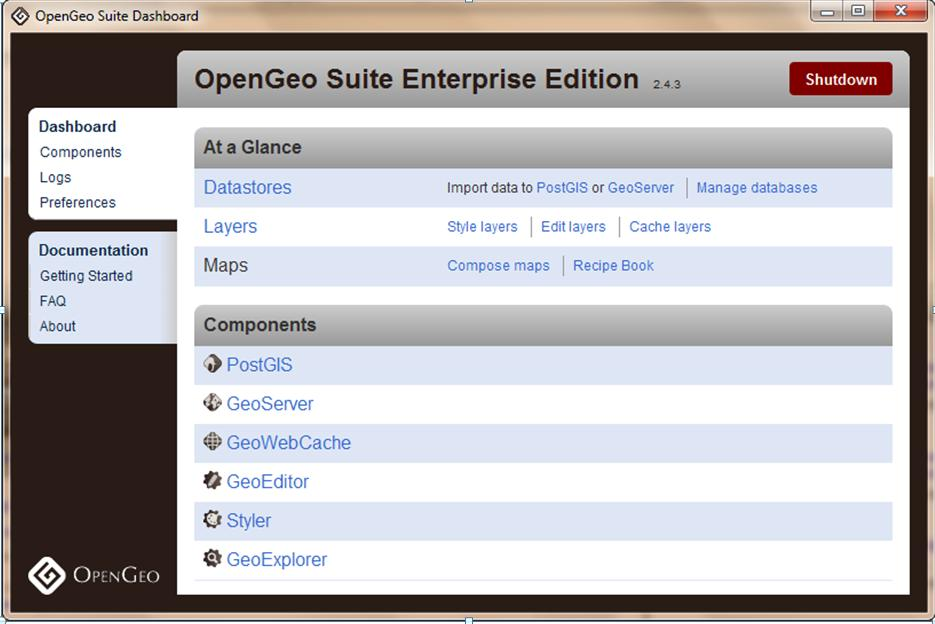
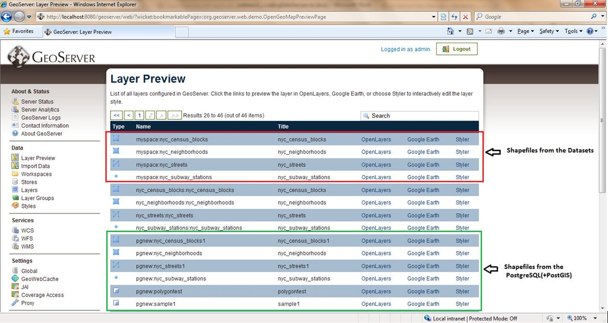
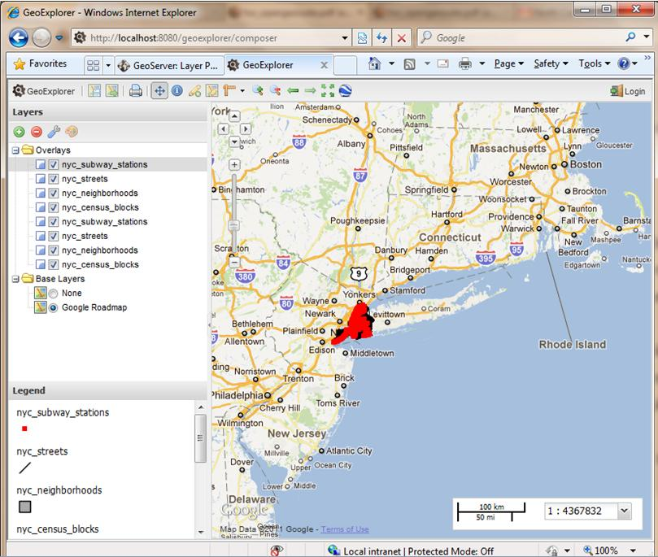
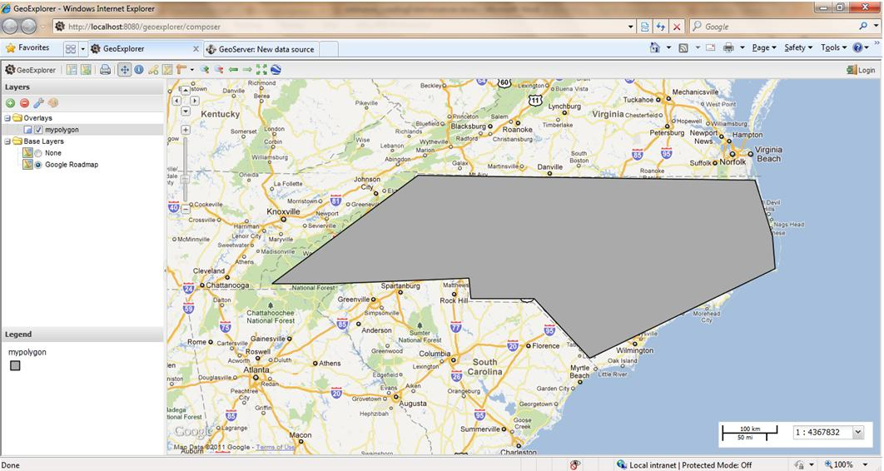
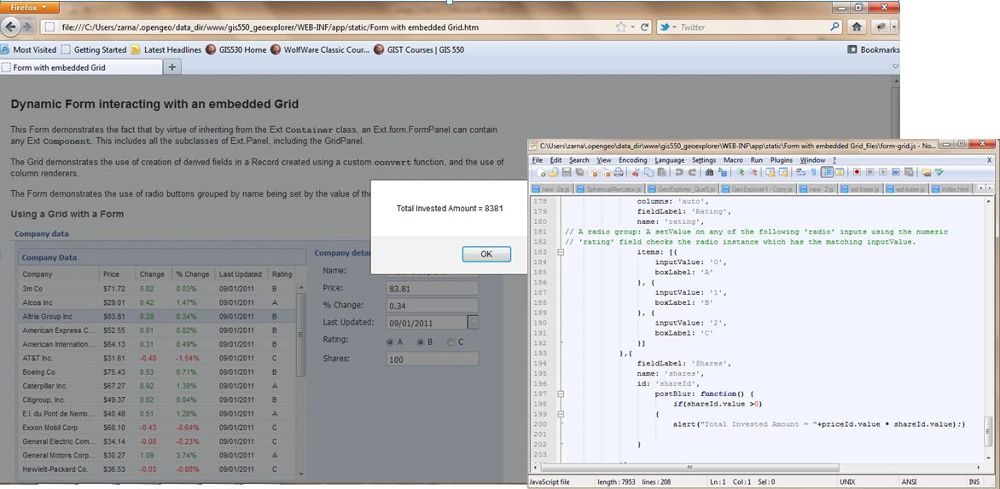
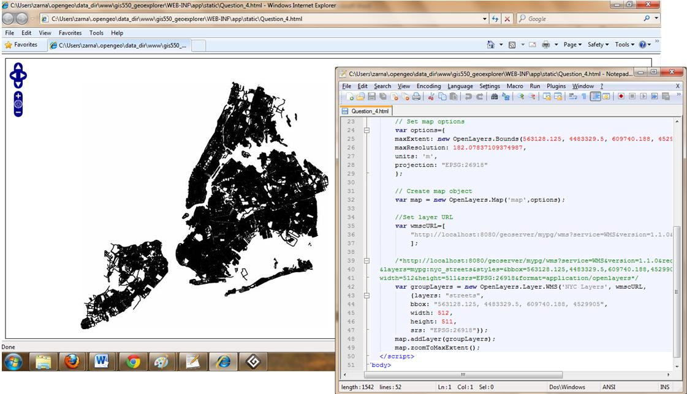
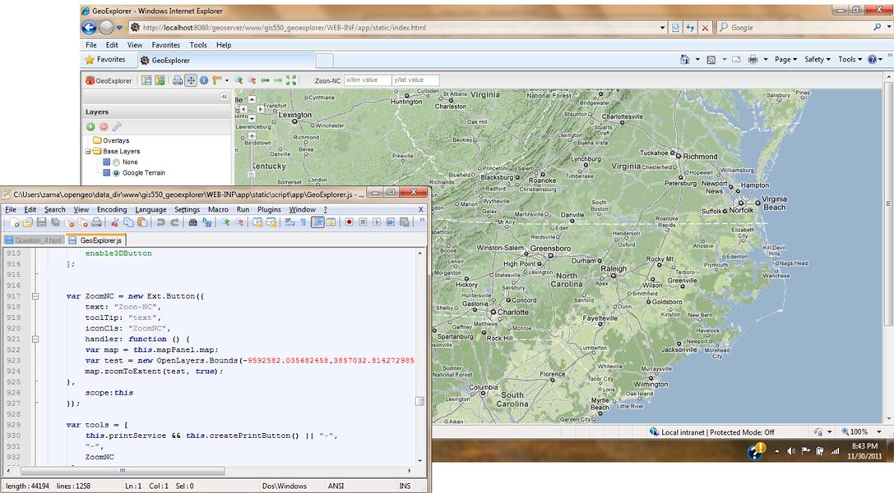
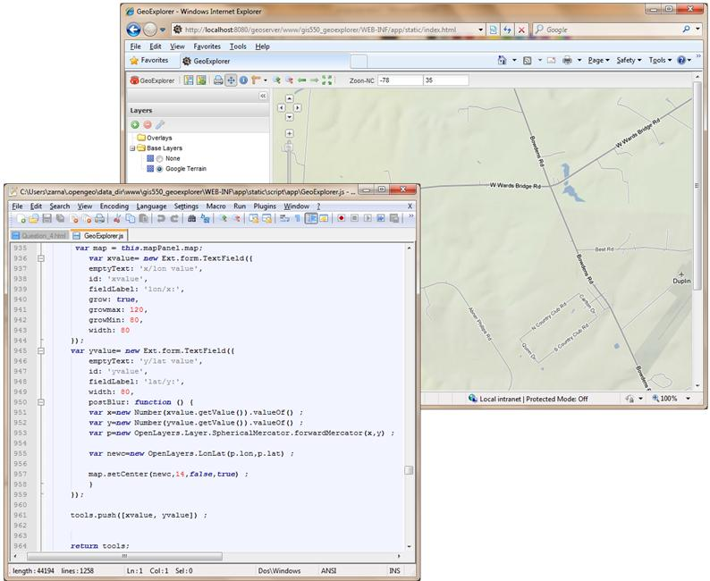

The term Open Source GIS describes practices in production and development that promote access to the end product's source materials
OpenGeo Suite
Source code structures
Java Script
Spatial SQL
OpenGeo Suite
The OpenGeo Suite is a complete web-based geospatial software stack. In this package, the applications contained are:
PostGIS - A spatially enabled object-relational database.
GeoServer - A software server for loading and sharing geospatial data.
GeoWebCache - A tile cache server that accelerates the serving of maps.
Styler - A graphical interface for designing maps.
GeoExplorer - A layer browser and map creator.
GeoEditor - A graphic interface for editing spatial data.
Reference: Above information is used from following reference.
http://suite.opengeo.org/opengeo-docs/usermanual/gettingstarted/whatis.html
Manage OpenGeo Suite using OpenGeo Suite Dashboard

Adding layers in GeoServer through two different methods.
1) Shapefiles from the datasets and
2) Shapefiles from the PostgreSQL(+PostGIS).

Following is the screenshot from GeoExplorer showing the NYC layers served through two different methods.

Publishing the newly created table polygontest in GeoServer, this is lined up correctly in Google Roadmap base layer.

The source code of the OpenGeo suite covers server, data and web services. The source codes were available for different components – PostGIS, GeoServer, GeoWebCache, GeoEditor, Styler, and GeoExplorer. The PostGIS which is open source PostgreSQL is relational database which store spatial data. The GeoServer share and edit geospatial data for interoperability. GeoExplorer is java script user interface framework for building browser. Other components like GeoWebCache, GeoEditor, and Styler were used in this application.
Java Script First we modified the code within the file named form-grid.js and added a new text input field named “Shares” at the bottom of the form (under the existing field of “Rating”). After the user has entered a number and a window popups automatically which shows the total amount of money the user has invested in the selected company. The value is equal to Shares*Price. Java Script Example 2 - OpenLayers In this example, we changed the code in the available layer of the world map from terrapages.net so that we are able to add one of the NYC layer created in the GeoServer. Java Script Example 3 - GeoExplorer We modified the code of GeoExplorer.js in order to add a new button which changes the extent of the map to the North Carolina State Boundary when clicked.
GoExt is a JavaScript library that provides a ground work for creating rich web mapping applications. It combines the web mapping library OpenLayers with Extjs, "a cross-browser JavaScript library for building rich internet applications." GeoExt provides a suite of customizable widgets and data handling support that makes it easy to build applications for viewing, editing, and styling geospatial data.
Reference: Above information is used from following reference.
http://opengeo.org/technology/geoext/
Java Script Example 1



Also added two text input fields in the code file GeoExplorer.js, which will allow the user to input a XY value pair for EPSG:900913, after the second value(for example, the y value) is entered, the map will zoom to that specific XY point.

Spatial SQL
The spatial query language has been designed as a minimal extension to the interrogative part of SQL and distinguishes from previously designed SQL extensions by (1) the preservation of SQL concepts, (2) the high-level treatment of spatial objects, and (3) the incorporation of spatial operations and relationships. It consists of two components, a query language to describe what information to retrieve and a presentation language to specify how to display query results.
Reflection
We used OpenGeo Suite to deliver map layers through web based framework. This is an open source tool and we have all source code provided for OpenGeo Suite. I Mainly I worked on Java Scripts in the source codes for GeoServer and GeoExplorer. It was quite challenging as I never worked with Java Script before. A java script was modified to incorporate a function that zoom the North Carolina boundary when user hits this function from tool bar. Another function was added that captures X and Y values form user and then zooms the respective area of the map.